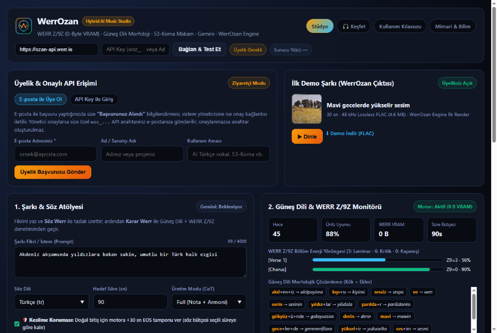
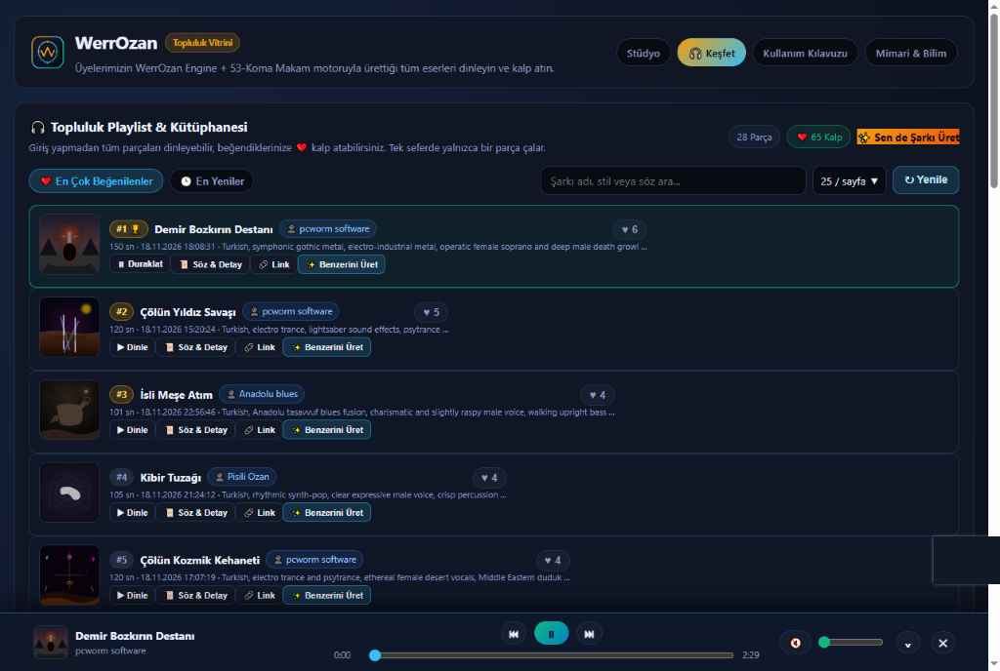

Stüdyo ve Keşfet arayüzlerini hangi sırayla, ne amaçla ve nasıl kullanacağınızı anlatan adım adım rehber
WerrOzan'ı Adım Adım Kullanın
WerrOzan iki katmandan oluşur: Tarayıcı Katmanı (üyelik gerektirmeden çalışan demo ve Keşfet oynatıcısı, Güneş Dili morfoloji, WERR Z/9Z ve 53-Koma WebAudio klavyesi) ve WerrOzan Motoru (onaylı üyelik anahtarıyla çalışan Sistem 2: Yorumcu taslak/uyarlama motoru, AI şarkı sentezi ve 53-Koma STFT ses/MIDI işleme). Hem masaüstünde hem mobilde 1 → 2 → 3 → 4 → 5 kart düzeni ve ekranın altında tek bir global yapışkan oynatıcı ile çalışır.
İlk Demo Şarkıyı 8 Makamda Dinle & Karşılaştır: Sağ üstteki İlk Demo Şarkı (WerrOzan Çıktısı) kartından Mavi gecelerde yükselir sesim (30 sn, 48 kHz Lossless FLAC) parçasının hem Orijinal (12-TET) hem de 8 Türk müziği makamına (Rast, Uşşak, Hüzzam, Hicaz, Segâh, Nihavent, Hüseynî, Kürdî · 53-Koma %85) çekilmiş sürümlerini çalarken anlık A/B geçişle dinleyebilir, alt oynatıcıdaki ⬇ düğmesinden indirebilirsiniz.
🎧 Keşfet Topluluk Playlisti: Üst menüdeki 🎧 Keşfet sayfasında tüm üyelerin ürettiği şarkıları giriş yapmadan dinleyebilir, beğendiklerinize ❤️ kalp atabilirsiniz.
Güneş Dili & WERR Z/9Z Monitörü: Söz kutusuna Türkçe satırlar yazdıkça tarayıcı motoru (0 B VRAM) anlık olarak sözcükleri kök+eklerine ayırır, hece sayısını ve büyük ünlü uyumu oranını hesaplar.
53-Koma Mikrotonal Klavye:3. 53-Koma / Türk Müziği Makam Stüdyosu kartından örneğin Hicaz veya Rast seçip Makam Dizisini Çal'a veya tek tek derecelere basarak 53-TET koma aralıklarını tarayıcıda duyabilirsiniz.

Şekil 1: Üst şeritte üyelik başvurusu ve üyeliksiz demo kartı; altta ise sol sütunda 1. Şarkı & Söz Atölyesi, sağ sütunda alt alta 2. Güneş Dili Monitörü ve 3. 53-Koma Stüdyosu yer alır.
1
E-posta ile Üyelik Başvurusu ve Onay Akışı
Başvuru Gönderin:E-posta ile Üye Ol sekmesinde e-posta adresinizi, adınızı/sanatçı adınızı ve kullanım amacınızı yazıp Üyelik Başvurusu Gönder butonuna basın.
Çift Yönlü E-posta Bildirimi: Başvuru yaptığınız anda size "WerrOzan Üyelik Başvurunuz Alındı" e-postası, sistem yöneticisine ise tek tıkla inceleme bağlantısı gider. Yönetici onaylamadığı sürece hiçbir API anahtarı oluşturulmaz.
Tek Tıkla Bağlantı: Yönetici onayladığında size özel woz_... API anahtarınız e-postanıza gelir. Maildeki "Stüdyoyu Aç & Otomatik Bağlan" linkine tıkladığınızda anahtar tarayıcınıza otomatik yüklenir ve üst çubuktaki durum rozeti Bağlı · WerrOzan Aktif olur.
2
"Söz Werr (Taslak)" ile Söz ve Stil Taslağı Üretme
Şarkı Fikri / İstem (4000 Karakter): Geniş çok satırlı istem kutusuna aklınızdaki temayı, enstrümanları, BPM'i, süreyi veya hikâyeyi dilediğiniz dilde yazabilirsiniz. İstemde açıkça bir dil adı belirtilmişse (ör. ingilizce, english, türkçe, rusça, japonca) Söz Dili otomatik o dile güncellenir; dil adı yazılmamışsa Söz Dili kutusunda seçili olan dil korunur (varsayılan Türkçe (tr)). İstemde süre geçiyorsa (ör. 2 dakika, 90 sn) Hedef Süre de otomatik güncellenir.
Hedef Süre & CoT: İlk denemeler için 60 sn–90 sn süre ve Full (Nota + Armoni) modu idealdir.
💬 Söz Werr (Taslak): Butona bastığınızda Sistem 2: Yorumcu motoru parça adını, İngilizce stil etiketlerini ve [Verse 1], [Chorus] formatlı şarkı sözlerini doldurur. Bu aşamada girdiler açık kalır; dil/süre/söz üzerinde istediğiniz değişikliği yaptıktan sonra ⚡ Karar Werr (Denetle) ile kilitleyip denetime geçebilirsiniz.
3
"Karar Werr (Denetle)", "🔓 Boş Werr" & Satır İçi "El Werr"
Üretime geçmeden önce ⚡ Karar Werr (Denetle) düğmesine basmanız gerekir. Bu adım 1. karttaki tüm girdileri kilitler, seçili dil dinamiklerine (TR Güneş Dili, EN İngilizce ölçü/kafiye, RU Kiril hece, JA Japonca mora) göre denetimi çalıştırır, 🔓 Boş Werr düğmesini açar ve 🎵 Şarkı Werr (Ozan) düğmesinin kilidini kaldırır:
Üst 4 Gösterge Kutusu:
Hece: Sözlerdeki toplam hece sayısını gösterir.
Ünlü Uyumu (%): Türkçe büyük/küçük ünlü uyumu oranıdır; %75+ değerler AI vokalin telaffuzunu belirgin şekilde akıcılaştırır.
WERR VRAM (0 B): Bu denetimin tamamen deterministik olduğunu ve sunucunun GPU/VRAM belleğini harcamadığını gösterir.
Süre Bütçesi: Seçilen hedef süreye göre WerrOzan motorunun ayırdığı token bütçesini (ör. 90s / 8192) gösterir.
Yeşil Balon (✓ 45 hece · %88 ünlü uyumu · Kesilme riski yok — Üretime hazır!): Sözler WerrOzan motorunda ses sentezine tam hazırdır.
Sarı Uyarı Balonu (⚠ ...): Şu 4 sorundan birini yakaladığında uyarır:
(1) Parantez içi notlar ((Death growls) vb. — yeri Stil Etiketleri kutusudur),
(2) Standart dışı [...] etiketleri (yalnızca [Intro], [Verse 1], [Pre-Chorus], [Chorus], [Bridge], [Outro] vb. standart etiketler kullanılmalıdır),
(3) Hece dengesizliği (aynı kıtadaki dizeler arası fark 4+ heceye çıkarsa vokal ritimden düşebilir),
(4) Kesilme Riski & Tireli Bölünme (seçili hedef süre için toplam hece/satır sayısı vokal bütçesini aşıyorsa veya [Intro]/[Outro] altında söylenecek satır ya da ka-ran-lık gibi tireli hece bölünmesi varsa uyarır).
✨ El Werr (Hataları Otomatik Düzelt): Sarı uyarı çıktığında 1. kart içinde açılır; kilidi bozmadan seçili dile ve hedef süreye göre parantezleri, tireli hece bölünmelerini ve fazla satırları temizleyip balonu yeşile çevirir.
🔓 Boş Werr: Karar Werr kilidini açıp söz, dil veya ayarlarda yeniden değişiklik yapmanızı sağlar (kilidi açınca Şarkı Werr tekrar kilitlenir).
🛡️ Kesilme Koruması (+45/60/75 sn Akıllı EOS Tamponu): Stüdyo'da varsayılan açıktır, 🧙♂️ Büyü Werr'de ise her zaman aktiftir; yavaş tempo (≤ 78 BPM) ve epik türlerde +75 sn'ye kadar esnek tavan vererek şarkının yarıda kesilmesini önler (erken biterse motor hemen durur).
Güneş Dili Morfolojik Çözümleme (Kök + Ekler): Her kelimenin kök ve eklerine nasıl ayrıldığını gösterir; Gelişmiş Tohum (WERR Seed) Ayarları ise açılır panelin altındadır.
Şekil 2: 1. kartta satır içi Karar Werr özet şeridi; sağ sütunda alt alta 2. Güneş Dili morfolojik çözümleme ve 3. 53-Koma mikrotonal klavye.
4
"Şarkı Werr (Ozan)" ile AI Ses Sentezi & 🧙♂️ Büyü Werr
🧙♂️ Büyü Werr (4 Adımlı Rehberli Sihirbaz): Üyelik girişi sonrası üstteki afişten açılan sihirbazda adım adım 1) Fikir & EOS Korumalı Süre → 2) Taslak & Karar Werr → 3) Gerekirse El Werr → 4) Son Onay & Şarkı Werr akışıyla hatasız üretim yapabilirsiniz.
Üretim Öncesi Dil Uyumu & F5 Koruması:Karar Werr (Denetle) kilidi kapanmadan Şarkı Werr (Ozan) açılmaz; kuyrukta veya üretimde aktif bir parçanız varsa sayfa yenilense (F5) bile düğme kilitli kalır.
Akustik Adım (NAR Steps) Seçimi:
10 · Hızlı Taslak: En hızlı fikir denemesi.
16 · Dengeli Kalite: Önerilen hız/kalite dengesi.
32 · Tam Stüdyo Kalitesi: Nihai master render.
Canlı Takip & Tek Global Yapışkan Oynatıcı:Sistem Günlüğü açılır panelinden aşamaları canlı izleyebilirsiniz. Demo, yeni üretilen şarkı, Medya Kitaplığı veya 53-Koma sürümlerinden hangisine ▶ Dinle derseniz ekranın altında tek bir global oynatıcı açılır (aynı anda yalnızca 1 parça çalar). Sağdaki ⌄ düğmesiyle oynatıcıyı küçültüp müziği kesmeden sağ altta mini hap (🎵 Parça Adı ⌃) olarak taşıyabilir, ses sürgüsüyle ses seviyesini ayarlayabilirsiniz.
5
53-Koma Makama Çekme (Ses + 14-Bit MIDI)
Üretilen Şarkıyı Makama Çekme: Render bittikten sonra (veya 4. Medya Kitaplığım kartındaki herhangi bir şarkıda) istediğiniz makamı (örn. Hicaz) ve STFT Koma Gücünü (önerilen %85) seçip 🎛️ Makama Çek butonuna basın.
Müzikal Altın Kural (Makama Çekmek ≠ Makamda Bestelemek):Makama Çek işlemi şarkının bestesini, sözünü veya melodisini sıfırdan değiştirmez; yalnızca ses dalgasındaki harmonik tepeleri ±45 cent (yarım sesten ince mikrotonal koma) penceresinde seçili makamın 53-TET perdelerine akortlar. Otantik bir Hicaz veya Hüseynî seyri için önce istemde makam/enstrüman karakterini belirtip üretin, ardından Makama Çek ile gerçek Türk müziği komalarına oturtun.
Kendi Ses Dosyanızı İşleme: Bilgisayarınızdan WAV/FLAC/MP3 yükleyip Dosyaya Koma Uygula ile aynı STFT faz-kilitli mikrotonal kuantizasyonu uygulayabilirsiniz.
ABC → 53-Koma MIDI: DAW'larda (FL Studio, Ableton, Logic, Cubase) mikrotonal çalım için 🎼 ABC → 53-Koma MIDI İndir butonunu kullanın; her notadan hemen önce ±2 yarım ses RPN duyarlılığı ve 14-bit Pitch Bend olayı yazılır.
6
4. Medya Kitaplığım, 5. Canlı Üretim Kuyruğu & E-posta Bildirimleri
Tek Seferde 1 Üretim (Zaman Damgalı FIFO): WerrOzan motoru aynı anda 1 şarkıyı işler; farklı üyelerin emirleri gönderim zaman damgasına göre sırayla işlenir. Sayfanın en altındaki 5. Canlı Üretim Kuyruğu tablosundan sıranızı ve Tahmini Bitiş: HH:MM TSİ rozetini görebilirsiniz.
Kullanıcı Başına 1 Aktif İş: Kuyrukta bekleyen veya üretimde olan bir parçanız varken, mevcut işiniz tamamlanmadan ya da kuyruktan çıkarılmadan yeni üretim emri gönderemezsiniz.
4 Aşamalı E-posta Akışı:
1. Kuyruğa Alındı: Tüm parça özellikleriniz, kuyruk sıranız, tahmini üretim süreniz (~dk) ve henüz üretime başlamadan kuyruktan çıkarma bağlantısı gönderilir.
2. Üretim Başladı: WerrOzan motoru parçanızı fiilen işlemeye başladığında tahmini süre ve TSİ bitiş saati bildirilir. Üretimi başlamış parça artık kuyruktan silinemez.
3. Tamamlandı / Hata: Sayfayı kapatsanız bile üretim sunucuda devam eder; bittiğinde doğrudan dinleme/FLAC indirme linki e-postanıza gelir.
4. 53-Koma Hazır: Bir parçayı makama çektiğinizde koma sürümünün linki ayrı e-posta ile iletilir.
Medya Kitaplığı Kotası (20 Ana Şarkı + 30 Dk Geçici 53-Koma): Hesabınıza özel en fazla 20 ana şarkı kalıcı olarak saklanır; 21. parça üretildiğinde en eski tarihli ana şarkı otomatik silinir. 53-Koma sürümleri 30 dakika geçici saklanır ve süre dolunca otomatik temizlenir; istediğiniz zaman ana parçadan yeniden komaya çekebilirsiniz.
Otomatik Kapak Görseli & Lightbox İndirme: Her şarkının başında otomatik üretilen kapak görseli yer alır. Kapağa tıkladığınızda görsel orijinal boyutunda Lightbox içinde açılır ve tek tıkla indirilebilir.
📥 Atölyeye Yükle & Kalite Değiştir (10 ↔ 16 ↔ 32 Adım): Kitaplıktaki her parçanın altındaki 📥 Atölyeye Yükle düğmesi ayarları Kart 1'e açık (düzenlenebilir) olarak yükler; dilerseniz değiştirip Karar Werr (Denetle) ile üretebilirsiniz. Ayrıca aynı melodi ve vokali koruyarak yalnızca akustik kaliteyi yükseltip düşürmek için satırdaki kalite seçicisini (10/16/32) kullanabilirsiniz.
🔑 Anahtar Kurtarma & 📧 E-posta Bildirim Tercihi: Üyelik kartındaki Anahtarımı Unuttum sekmesinden kayıtlı e-postanızla anahtarınızı yenileyebilir, giriş yaptıktan sonra E-posta Bildirimleri kutucuğuyla üretim bildirim e-postalarını açıp kapatabilirsiniz.
7
🎧 Keşfet — Topluluk Playlist & Kütüphanesi
Üyeliksiz Dinleme, 🔀 Karışık Çal (Shuffle) & Tekli Oynatıcı:🎧 Keşfet sayfası tüm ziyaretçilere açıktır. Aynı anda yalnızca tek parça çalar; alt yapışkan oynatıcıdan önceki/sonraki parçaya geçebilir, 🔀 Karışık Çal ile tekrar etmeden rastgele sırayla dinleyebilir, Space tuşuyla çal/duraklat yapabilir, ses seviyesini ayarlayabilir veya ⌄ düğmesiyle oynatıcıyı mini hapa küçültebilirsiniz.
53-Koma Çip Önizleme & Üyeliksiz Makama Çekme: Tüm Keşfet parçalarında doğrudan kart üzerindeki 8 makamlı 🎛️ Makama Çek seçicisiyle 53-Koma önizlemesi oluşturabilir (30 dakika önbellekli), alt oynatıcıdaki ⬇ düğmesiyle FLAC indirebilirsiniz.
❤️ Kalp (Beğeni) & Akıllı Sıralama:En Çok Beğenilenler görünümünde en çok kalp alan şarkılar üstte listelenir; eşit kalp sayısına sahip parçalar kendi aralarında en yeniden eskiye sıralanır, kalbi olmayan parçalar altta yer alır. En Yeniler sekmesiyle tüm arşivi doğrudan tarih sırasıyla gezebilirsiniz. Beğeniler mükerrer oya ve botlara karşı reCAPTCHA v3 ile korunur; tekrar tıklayarak kalbinizi geri alabilirsiniz.
Kompakt Etiketler, 📜 Söz & Detay ve ✨ Benzerini Üret: Kartlar mobilde de rahat okunması için ilk 4 stil etiketini gösterir; 📜 Söz & Detay düğmesi tüm stil etiketlerini ve tam şarkı sözlerini pencerede açar. Beğendiğiniz bir parçanın ✨ Benzerini Üret düğmesine bastığınızda stili ve söz yapısı doğrudan Stüdyo'nun 1. kartına açık taslak olarak aktarılır.
Arama, Sayfalama & Canlı Üretim Kuyruğu: Parça adı, sanatçı veya stil etiketine göre anlık arama yapabilir, sayfa başına 25 veya 50 şarkı listeleyebilirsiniz. Sayfanın en altındaki Canlı Üretim Kuyruğu tablosundan şu an üretilmekte olan eserleri de canlı takip edebilirsiniz.

Şekil 3: 🎧 Keşfet sayfası — kalp sıralaması, kompakt etiketler, Söz & Detay / Benzerini Üret butonları ve gizlenebilir yapışkan oynatıcı.
★
Örnek Kullanım Senaryosu: "Akdeniz Akşamında Hicaz Türkü"
İstem: Şarkı fikrine "Akdeniz kıyısında yıldızları izleyen sıcak, özlem dolu bir Anadolu folk ezgisi" yazın; Süre: 30 sn, Dil: Türkçe (tr), NAR Steps: 16 seçin.
Söz Werr + Karar Werr (Denetle): Taslağı ürettirin, ardından ⚡ Karar Werr (Denetle) ile Kart 1'i kilitleyip ünlü uyumunun %85+ olduğunu ve kesilme riski bulunmadığını doğrulayın (sarı uyarı varsa tek tıkla ✨ El Werr'e basın).
Render:🎵 Şarkı Werr (Ozan)'a basın; tamamlanan FLAC çıktısını alt global oynatıcıdan dinleyin.
53-Koma Final:3. 53-Koma Stüdyosu'ndan Hicaz (La · 5-12-5 artık), STFT Gücü %85 seçip Makama Çek'e tıklayın. Batı 12-TET perdelerinin Hicaz'ın otantik +13.2c ve -15.1c koma renklerine kaydığını duyup yeni FLAC'ı indirin.
Hemen Denemeye Hazır mısınız?
Üyeliksiz olarak Keşfet listesini dinleyebilir veya Stüdyo'da kendi 53-Koma eserinizi üretebilirsiniz.